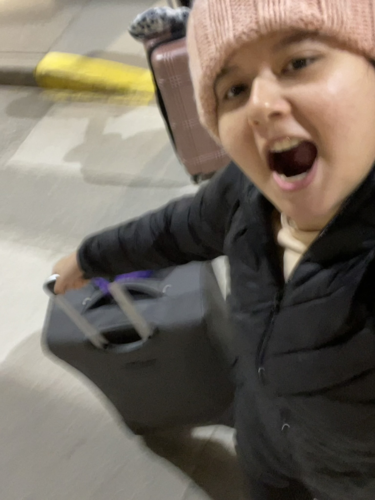

A little bit about me, my favorite color is purple (light or pastels), I love squishmellows,
and
I enjoy watching horror and korean romance shows/movies. I'm a bit shy at first, but when you get to know me I'm
bubbly and silly 🤭. I was originally born in Tajikistan (I'm Tajik), I lived there for 10 years, and then I
moved
to Omaha with my family. When we moved it was winter time and that was the first time I saw tall hills of snow.
Moving here was just the beginning though. I had to adjust to an entire new language, unfamiliar school systems,
and the feeling of not fitting in. One day my uncle took me down to get acclimated to the classes. However, what
I
didn't know that he was lying and it was actually my first day of school. One of the earliest memories I have of
school is when the teacher asked me to spell my own name. I ended up misspelling it because I wasn't used to the
English letters. Fun fact about me; I can speak 4 languages.
To be honest I was anxious and scared to be
put into a new country, but I actually like it here. As I grew older I met nice people and I learned new things.
I
gained experience in different workplaces and eventually, after realizing I didn't want to be in nursing, found
my
passion for Physical Therapy! I want to become a prominent figure in the healthcare community. At first it was a
necessity to fit into the culture in order to survive, but now it's a want to fit into the culture to strive.

Maki's Language Proficiency
| Language |
Proficiency Level |
Use Case |
| English |
Fluent |
Everyday use |
| Spanish |
Intermediate |
Casual conversations |
| Tajik |
Advanced |
Professional and personal |
| Russian |
Beginner |
Learning |
Maki's Language Proficiency
| Language |
Proficiency Level |
Use Case |
| English |
Fluent |
Everyday use |
| Spanish |
Intermediate |
Casual conversations |
| Tajik |
Advanced |
Professional and personal |
| Russian |
Beginner |
Learning |